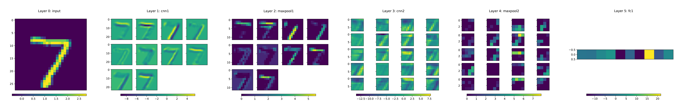
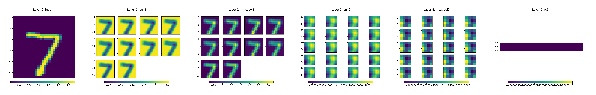
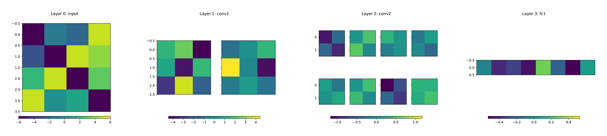
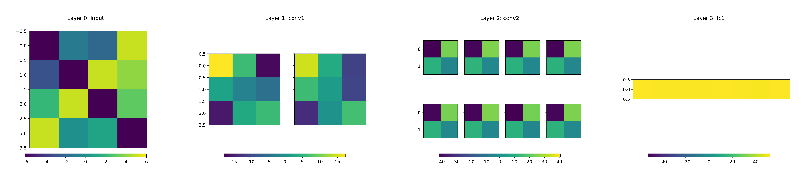

Neural Network Signal Processing
nsp is a Python package for extracting and visualizing activation patterns of PyTorch neural networks. It can
extract the computational graph of a neural network as a directed graph.
extract the activation pattern generated by an input of a neural network.
compute the Fourier transform of an activation pattern (signal) in a neural network (directed graph) based on [1] and [2].
visualize activation patterns and their Fourier coefficients.
Visualization of the activation pattern

Visualization of the Fourier coefficients

Dependencies
Installation requires pytorch, networkx, and numpy. Some functions will use scipy and/or matplotlib.
Installation
Use the package manager pip to install nsp.
pip install nsp
Usage
Get your network as torch.nn.Module and a valid input.
import nsp
import torch
import torch.nn as nn
class Network(nn.Module):
def __init__(self):
super(Network, self).__init__()
self.conv1 = nn.Conv2d(in_channels=1, out_channels=2, kernel_size=2)
self.conv2 = nn.Conv2d(in_channels=2, out_channels=8, kernel_size=2)
self.fc1 = nn.Linear(1*4*8, 8)
def forward(self, x):
x = torch.sigmoid(self.conv1(x))
x = torch.sigmoid(self.conv2(x))
x = x.view(-1, 1*4*8)
x = self.fc1(x)
return x
network = Network()
image = torch.tensor([[[[-6, -1, -2, 5],
[-3, -6, 5, 4],
[ 2, 5, -6, 3],
[ 5, 0, 1, -6]]]], dtype = torch.float)
Extract the activation pattern.
activations = nsp.Activations(network, image)
Extract the graph of your neural network. NNGraph extends networkx.DiGraph.
graph = nsp.NNGraph(activations)
Transform the activation pattern into its spectrum.
spectrum = graph.transform(activations)
Visualize the activation pattern and the spectrum. Pick your favorite cmap_style from matplotlib colormaps.
nsp.Visualizer.visualize_pattern(activations, pdf_filepath='activations.pdf', scale='layernorm', cmap_style='viridis')
nsp.Visualizer.visualize_pattern(spectrum, pdf_filepath='spectrum.pdf', scale='layernorm', cmap_style='viridis')
Visualization of the activation pattern

Visualization of the spectrum

For more details check out the tutorials and read the documentation.
License
Developed by Felipa Schwarz (c) 2021
References
[1] Markus Püschel, Bastian Seifert, and Chris Wendler. Discrete signal processing on meet/join lattices. IEEE Transactions on Signal Processing, 2021.
[2] Bastian Seifert, Chris Wendler and Markus Püschel. A Causal Shift and Fourier Transform for Directed Acyclic Graphs. Submitted for publication, 2021.